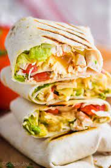

Wondering what to do with all those ingredients left in recipients in the fridge? Just put them together in a tortilla.
- Rice from a week ago
- The wrinled remaining of a pepper you used a week ago and left in the fridge
- Black olives
- Lettuce. Doesn't mind if it's turning yellow
- Chicken, canned tuna, whatever protein you have
- Corn
- Pepper
- Salt
- Tortillas
- Cheese
- Chop everything
- Season the chicken or meat with salt and pepper and chop in medium sized cubes
- Cook at high heat
- Put the tortillas in a wide pan at low heat so they heat but don't get toasted
- Put the cheese on top of the tortillas. Let them on the pan until the cheese melts
- Put everything on top of the tortilla
- Add salt and pepper on vegetables
- Enjoy!
Back to homepage